Website Design CV
by
Oliver Cable.
Web Developer.
Profile Summary
I am an enthusiastic Full-Stack Developer with a solid foundation in front-end and back-end technologies. Proficient in HTML5, CSS3, and JavaScript, I am passionate about coding and committed to expanding my technical expertise. I am eager to apply my web development knowledge in a growth-focused environment that encourages continuous learning and development. I thrive in fast-paced, collaborative settings and I am known for my creativity, adaptability, and problem-solving skills.
My Skills
Programming Languages : JavaScript, HTML5, CSS3, Python, SQL
Front-End Technologies : ReactJS, Bootstrap, SASS, Responsive Web Design
Back-End Technologies : NodeJS, ExpressJS, RESTful APIs
Databases : SQL, MySQL
Version Control : Git, GitHub
Development Tools : Webpack, Swagger, OpenAPI, Jenkins
Methodologies : Agile, Scrum
Other : SEO Best Practices, Problem Solving, Debugging, Cross-Functional Collaboration
Experience
– Developed dynamic, responsive user interfaces using ReactJS, HTML5, and CSS3 to enhance user experience and application performance.
– Designed and implemented NodeJS back-end systems to support scalable and data-driven applications.
– Integrated SQL and MongoDB databases into web applications to improve data management and storage.
– Utilised Git for version control and Jenkins for continuous integration and deployment.
– Debugged and optimised application code to improve performance.
– Created and maintained technical documentation using GitHub.
– Produced a full software development cycle.
Education
CodeAcademy – Online
Full-stack Engineer, Back-end Engineer, Front-end Engineer, Computer Science, Python3, SQL July 2024 to December 2024
Barton Peveril College – Eastleigh
A-Level or Equivalent in Business, Graphic Design, Environmental Science September 2018 to June 2021
Henry Beaufort – Winchester
GCSEs in English Language, English Literature, Mathematics, Science September 2013 to July 2018
Contact Me
Eastleigh, UK
Phone: +44 7766 950267
Email: oliver.cable.james@outlook.com
Linkedin: www.linkedin.com/in/oliver-cable
Let's get in touch. Send me a message: